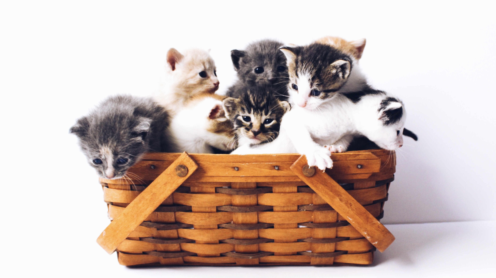
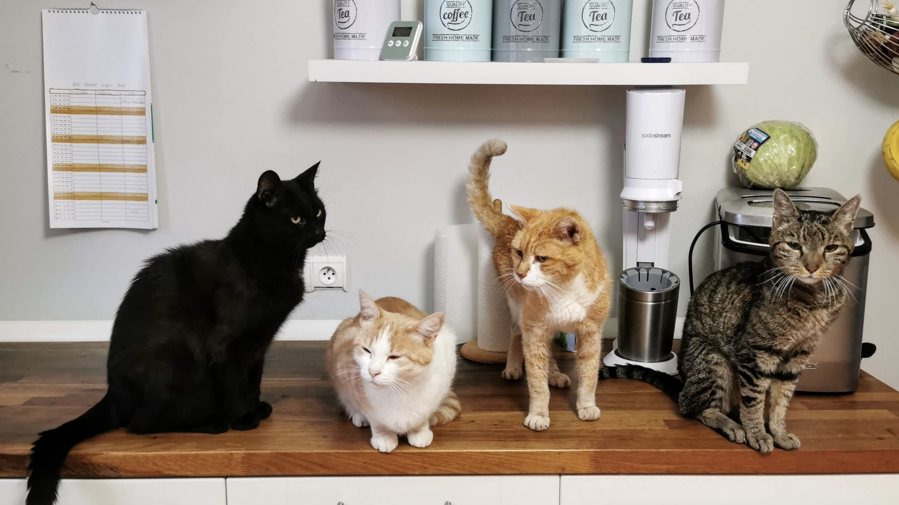

Fundación Club Gatero
Quiénes somos
Somos un grupo de personas, amantes de los gatos, que nos organizamos principalmente para trabajar en su protección, buscándoles un hogar definitivo y enseñando a la gente a comprender mejor a nuestros pequeños tigres de salón. Actualmente tenemos aprobada la personalidad jurídica en la Municipalidad de Ñuñoa.
Cabe señalar que acogemos principalmente a gatitos de 1 a 4 meses a través de nuestros socios, que han sido abandonados, solos o eventualmente con sus madres; los ingresamos a las gateras que arrendamos en una clínica veterinaria o a hogares temporales y tras rehabilitarlos, los entregamos en adopción.
Estrategias de trabajo
Como Fundación nos centramos en 3 estrategias principales para llevar a cabo nuestra labor:
- Acoger, apadrinar y reubicar gatitos de la calle: acogemos a gatitos abandonados, principalmente de entre 1 a 4 meses de edad, los que son recibidos transitoriamente en hogares temporales de amigos y socios del Club, se les da atención veterinaria, abrigo, alimento y el cariño necesario para que se recuperen y crezcan como gatitos sanos y sociables; hasta encontrarles un hogar responsable.
- Esterilización: para cortar el ciclo del abandono, se realizan mensualmente operativos de esterilización en convenio con la clínica veterinaria Dra. Triviño, a un valor preferencial para los gatitos del Club y para los ahijados de los socios.
- Educación: difundimos información apropiada para la protección, cuidado y responsabilidad que implica tener una mascota. El primer paso es nuestra web, en la que incluimos información importante tanto para los futuros adoptantes como para la comunidad en general, en relación a la tenencia responsable de mascotas, y en nuestras redes sociales de Facebook, Twitter e Instagram.